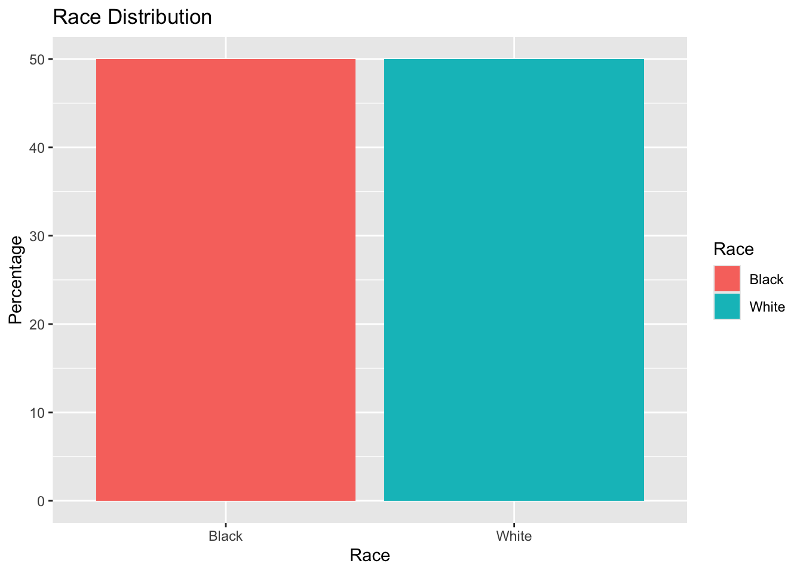
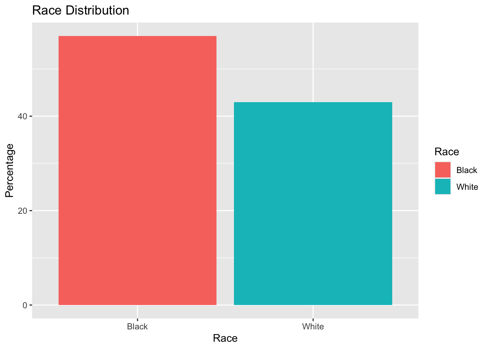

Dataset Name:NCHS - Death Rates and Life Expectancy at Birth
This dataset provides an annual data on death rates and life expectancy at birth in the United States, offering key indicator for public health analysis.
Key variables:
Year: The specific year of the data
Race: Black or White
Sex: Male or Female
Average Life Expectancy (Years): The average number of years a newborn is expected to live.
Age-adjusted Death Rate: The number of deaths per 100,000 population.
Data Loading:
Load necessary packages
# Load necessary packageslibrary (here)
here() starts at C:/Users/Adminn/Desktop/MSDA/Summer 2024/Practicum II/rinuthomas_P2_portfolio
library(readr)library(dplyr)
Attaching package: 'dplyr'
The following objects are masked from 'package:stats':
filter, lag
The following objects are masked from 'package:base':
intersect, setdiff, setequal, union
library(ggplot2)
Read and Load the dataset
# Define data location using here() packagedata_location = here::here("cdcdata-exercise","NCHS_-_Death_rates_and_life_expectancy_at_birth.csv")# Load Datacdc_data =read_csv(data_location)
Rows: 1071 Columns: 5
── Column specification ────────────────────────────────────────────────────────
Delimiter: ","
chr (2): Race, Sex
dbl (3): Year, Average Life Expectancy (Years), Age-adjusted Death Rate
ℹ Use `spec()` to retrieve the full column specification for this data.
ℹ Specify the column types or set `show_col_types = FALSE` to quiet this message.
head(cdc_data)
# A tibble: 6 × 5
Year Race Sex Average Life Expectancy (Y…¹ Age-adjusted Death R…²
<dbl> <chr> <chr> <dbl> <dbl>
1 1900 All Races Both Sexes 47.3 2518
2 1901 All Races Both Sexes 49.1 2473.
3 1902 All Races Both Sexes 51.5 2301.
4 1903 All Races Both Sexes 50.5 2379
5 1904 All Races Both Sexes 47.6 2502.
6 1905 All Races Both Sexes 48.7 2424.
# ℹ abbreviated names: ¹`Average Life Expectancy (Years)`,
# ²`Age-adjusted Death Rate`
str(cdc_data)
spc_tbl_ [1,071 × 5] (S3: spec_tbl_df/tbl_df/tbl/data.frame)
$ Year : num [1:1071] 1900 1901 1902 1903 1904 ...
$ Race : chr [1:1071] "All Races" "All Races" "All Races" "All Races" ...
$ Sex : chr [1:1071] "Both Sexes" "Both Sexes" "Both Sexes" "Both Sexes" ...
$ Average Life Expectancy (Years): num [1:1071] 47.3 49.1 51.5 50.5 47.6 48.7 48.7 47.6 51.1 52.1 ...
$ Age-adjusted Death Rate : num [1:1071] 2518 2473 2301 2379 2502 ...
- attr(*, "spec")=
.. cols(
.. Year = col_double(),
.. Race = col_character(),
.. Sex = col_character(),
.. `Average Life Expectancy (Years)` = col_double(),
.. `Age-adjusted Death Rate` = col_double()
.. )
- attr(*, "problems")=<externalptr>
# View the column namesprint(colnames(cdc_data))
[1] "Year" "Race"
[3] "Sex" "Average Life Expectancy (Years)"
[5] "Age-adjusted Death Rate"
Renamed the columns
The column names were too long so in order to make referencing the column name while coding I renamed two columns as shown in the code below
# Rename columns to avoid issues with spaces or special characterscdc_data = cdc_data %>%rename(DeathRate =`Age-adjusted Death Rate`,LifeExpectancy =`Average Life Expectancy (Years)` )
Filter the Data
The dataset had information from 1900 to 2018. Hence, I chose years 1993 through 2018.
# Filter the datafiltered_cdc_data <- cdc_data %>%filter(Year >=1993& Year <=2018, Race %in%c("Black", "White"), Sex %in%c("Male", "Female"))# DIsplay Structure of the filtered datastr(filtered_cdc_data)
Summarized the cleaned data to see mean and median for the numerical variables.
# Let's summarize the datasummary(cleaned_cdc_data)
Year Race Sex LifeExpectancy
Min. :1993 Length:100 Length:100 Min. :64.60
1st Qu.:1999 Class :character Class :character 1st Qu.:72.95
Median :2005 Mode :character Mode :character Median :75.90
Mean :2005 Mean :75.44
3rd Qu.:2011 3rd Qu.:78.75
Max. :2017 Max. :81.40
DeathRate
Min. : 617.6
1st Qu.: 716.3
Median : 907.1
Mean : 937.2
3rd Qu.:1054.2
Max. :1631.1
Analysis:
Life Expectancy: The distribution of life expectancy values is relatively symmetric, with the mean and median being very close.
Death Rate: The distribution of death rates is slightly skewed to the right, as indicated by the mean being higher than the median.
# A tibble: 2 × 3
Sex count percentage
<chr> <int> <dbl>
1 Female 50 50
2 Male 50 50
Visualizations
Distribution of DeathRate
# Distribution of Death Ratep1 =ggplot(cleaned_cdc_data, aes(x = DeathRate)) +geom_histogram(binwidth =1, fill ="blue", color ="black") +labs(title ="Distribution of Death Rate", x ="Death Rate", y ="Frequency")print(p1)
Observation: The distribution appears to be highly varied and does not follow a typical bell-curve shape. The histogram shows many individual bars, indicating a wide spread of death rates with many unique values. The death rates range from approximately 500 to over 1500. The graph indicates that the death rates in the dataset are highly variable and spread across a wide range of values.
Distribution of Life Expectancy
# Distribution of Life Expectancyp2 =ggplot(cleaned_cdc_data, aes(x = LifeExpectancy)) +geom_histogram(binwidth =1, fill ="green", color ="black") +labs(title ="Distribution of Life Expectancy", x ="Life Expectancy", y ="Frequency")print(p2)
Observation: The distribution of life expectancy is not perfectly normal (bell-shaped). Instead, it shows multiple peaks. Life expectancy values range from approximately 65 to 80 years. The graph shows that most of the individuals in the dataset have life expectancies around 75 and 80 years, with fewer individuals having life expectancies in the lower 70s and upper 60s.
Race distribution
# Race distributionp3 =ggplot(race_summary, aes(x = Race, y = percentage, fill = Race)) +geom_bar(stat ="identity") +labs(title ="Race Distribution", x ="Race", y ="Percentage")print(p3)

Observation: The bar plot shows that the dataset is almost evenly split between Black and White individuals, each constituting about half of the total dataset. This balanced distribution is beneficial for analyses that compare these racial groups, as it minimizes the risk of bias due to unequal representation.
Sex distribution
# Sex distributionp4 =ggplot(sex_summary, aes(x = Sex, y = percentage, fill = Sex)) +geom_bar(stat ="identity") +labs(title ="Sex Distribution", x ="Sex", y ="Percentage")print(p4)
Observation: The bar plot shows that the dataset is almost evenly split between females and males, each constituting about half of the total dataset. This balanced distribution is beneficial for analyses that compare these gender groups, as it minimizes the risk of bias due to unequal representation.
This section is contributed by Savanna Torres.
I utilized ChatGPT to produce the synthetic data set. This is the prompt I used:
Produce a synthetic data set similar to this with both Black and White randomly for Race and Male and Female randomly for Sex:
# Set seed for reproducibilityset.seed(123)# Generate dataYear <-1993:2092# 100 yearsRace <-sample(c("Black", "White"), 100, replace =TRUE)Sex <-sample(c("Female", "Male"), 100, replace =TRUE)LifeExpectancy <-round(rnorm(100, mean =75, sd =2), 1) # Normal distribution with mean 75 and sd 2DeathRate <-round(rnorm(100, mean =950, sd =30), 0) # Normal distribution with mean 950 and sd 30# Combine into a tibblesynthetic_data <-tibble(Year = Year,Race = Race,Sex = Sex,LifeExpectancy = LifeExpectancy,DeathRate = DeathRate)
View synthetic data:
print(synthetic_data)
# A tibble: 100 × 5
Year Race Sex LifeExpectancy DeathRate
<int> <chr> <chr> <dbl> <dbl>
1 1993 Black Female 73.6 1016
2 1994 Black Male 75.5 989
3 1995 Black Male 74.5 942
4 1996 White Female 74.3 966
5 1997 Black Male 73.1 938
6 1998 White Male 74.9 936
7 1999 White Female 73.4 926
8 2000 White Female 71.7 932
9 2001 Black Female 74.2 1000
10 2002 Black Male 76.8 948
# ℹ 90 more rows
Summarizing the synthetic data set:
summary(synthetic_data)
Year Race Sex LifeExpectancy
Min. :1993 Length:100 Length:100 Min. :70.90
1st Qu.:2018 Class :character Class :character 1st Qu.:73.38
Median :2042 Mode :character Mode :character Median :74.55
Mean :2042 Mean :74.79
3rd Qu.:2067 3rd Qu.:75.92
Max. :2092 Max. :81.50
DeathRate
Min. : 897.0
1st Qu.: 933.8
Median : 951.0
Mean : 953.6
3rd Qu.: 972.8
Max. :1019.0
Beginning with the summary of the synthetic data we find that the minimum Life Expectancy is higher at 70.90 as opposed to the minimum Life Expectancy of 64.60 with the cleaned data set. As for the Max Life Expectancy with the synthetic data we have a slightly higher value of 81.50 while the cleaned data set’s Max Life Expectancy is at 81.40.
# A tibble: 2 × 3
Sex count percentage
<chr> <int> <dbl>
1 Female 46 46
2 Male 54 54
Again with the summary stats for Sex using the synthetic data set we have a randomized percentage for both male and female while the cleaned data set was split down the line at 50/50.
Distribution of Death Rate Visualization
# Distribution of Death Ratep1_syn =ggplot(synthetic_data, aes(x = DeathRate)) +geom_histogram(binwidth =1, fill ="blue", color ="black") +labs(title ="Distribution of Death Rate", x ="Death Rate", y ="Frequency")print(p1_syn)
The distribution of Death Rate with the synthetic data takes more of a bell-shaped curve than the cleaned data which showed to be right skewed.
Distribution of Life Expectancy visualization
# Distribution of Life Expectancyp2_syn =ggplot(synthetic_data, aes(x = LifeExpectancy)) +geom_histogram(binwidth =1, fill ="green", color ="black") +labs(title ="Distribution of Life Expectancy", x ="Life Expectancy", y ="Frequency")print(p2_syn)
The distribution of Life Expectancy using the synthetic data is also more close to a bell curve shape while the cleaned data took more of a left skewed shape.
Race distribution visualization
# Race distributionp3_syn =ggplot(race_summary_syn, aes(x = Race, y = percentage, fill = Race)) +geom_bar(stat ="identity") +labs(title ="Race Distribution", x ="Race", y ="Percentage")print(p3_syn)

We can see here visually that the synthetic data randomly distributed the percentage between race.
Sex distribution visualization
# Sex distributionp4_syn =ggplot(sex_summary_syn, aes(x = Sex, y = percentage, fill = Sex)) +geom_bar(stat ="identity") +labs(title ="Sex Distribution", x ="Sex", y ="Percentage")print(p4_syn)
Also seen here is the random distribution of the percentage between sex.